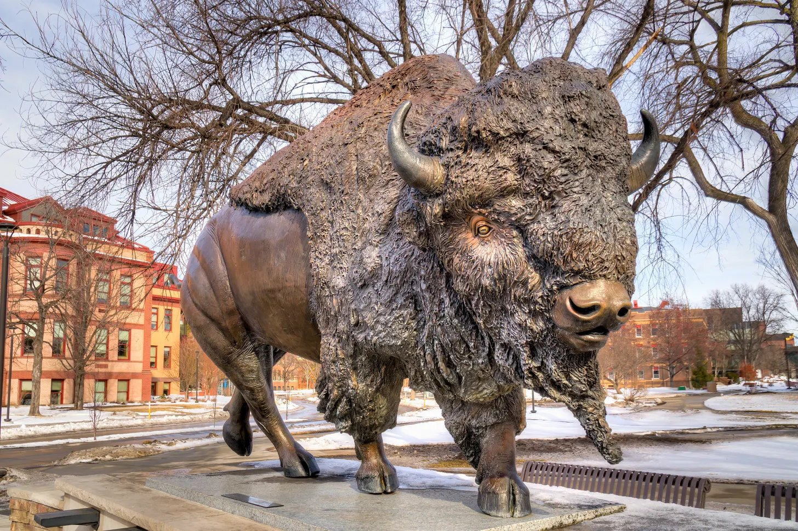
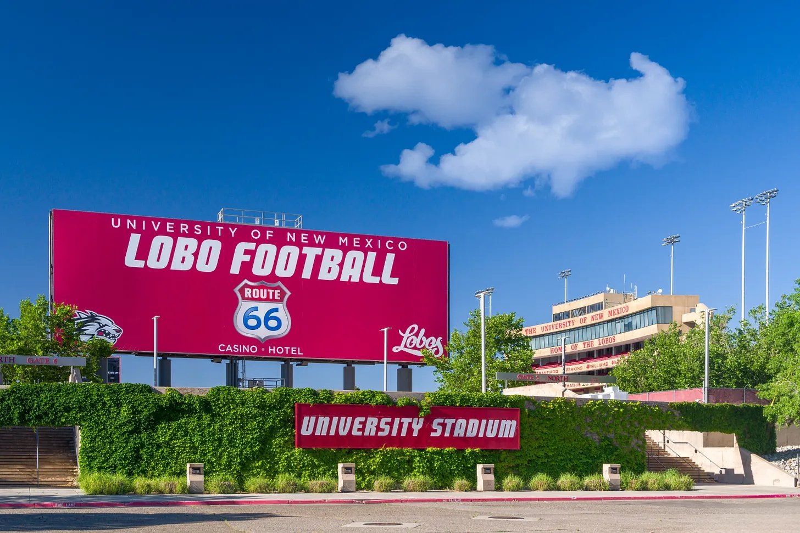

Elevation Change’s No. 3 North Dakota State travels to No. 5 New Mexico in a battle of Mountain West titans.
Both teams have consistently been at the top of the Western 20 rankings this season and both a serious contenders for the G6 automatic playoff bid in what looks to be the final year of the 12-team playoff.
North Dakota State started the year scorching hot, with five straight wins in their first season at the FBS level after years of dominating at the FCS level. They’ve hit a roadblock in their last three games though with a 13-7 loss at UNLV and a too-close-for-comfort home victory over Nevada that was a one score game heading into the fourth quarter.
The Bison have a well rounded offense, with no one player standing out as the best player. Quarterback Nathan Hayes has been solid with 1,272 yards and 10 touchdowns, Miles Mitchell and DJ Scott lead the way on the ground with over 300 yards rushing a piece, and Jackson Williams leads a team with 16 different receivers making a catch with 432 receiving yards.

On the defensive side, Kelton McCaslin has been superb off the line with four sacks and 16 total tackles. Freshman cornerback Marion Moore has been outstanding, with his four interceptions being tied for second best across all FBS schools. Seven different Bison have recorded an interception this year.
New Mexico have also started to slow after a hot start to the year. After a 61-7 blowout win against UTEP, the Lobos traveled to Hawaii last week where they faced a 10-0 first half deficit before rallying to win the game 21-10. With the Lobos only recording 94 total yards of passing against a stingy Hawaii pass defense, four different rushers combined for 243 yards and three touchdowns on the ground, led by Scottre Humphrey with 90 yards and two touchdowns.

The Lobos excelled at keeping Hawaii’s offense in check, with 11 tackles for loss and a 41-yard interception return. As a whole, the Lobos are have yet allow more than 18 points in a game this season, with only one team recording more than 300 yards of offense in a game this season. Darren Agu and Brett Karhu are leading a dangerous defensive line with four sacks apiece and Tavian Combs is locking it down in the secondary with four interceptions and 24 tackles.
The Elevation Change model like the home Lobos by a touchdown over the Bison. North Dakota State will be the second toughest team the Lobos have faced this year, after Oklahoma, but we think that the Lobos will pull it off and gain a serious edge in a tight Mountain West race.
Prediction
- New Mexico
- 27
- North Dakota State
- 20